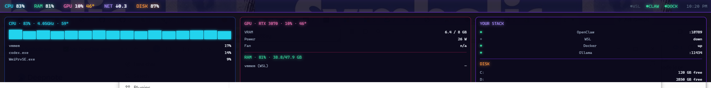

A slim, always-on-top neon bar for Windows. CPU · RAM · GPU · temps · network — plus live health for your dev stack. Click-through, so it never gets in your way.
Windows 10 / 11 (x64) · ~free · no account
↑ this is live — hover the bar to drop the panel
Built like a real tool, not a skin — 35 tests, modular collectors, a proper Windows AppBar.
Pins to the top of your screen but never steals clicks — your apps stay fully usable. Hover to reveal the detail panel.
Registers as a Windows AppBar like the taskbar, so maximized windows sit below the bar instead of being covered. Self-healing across restarts.
GPU temp out of the box via nvidia-smi; CPU temp through LibreHardwareMonitor. Pulsing red alerts when something redlines.
Live up/down dots for Docker, WSL (vmmem), Ollama, and any local service. The part developers actually keep glancing at.
A neon look with selectable palettes — Classic synthwave, Tron ice, or Toxic green. Try the switcher in the demo above.
MIT-licensed, Electron + a clean modular architecture. Read every line, file an issue, or add your own collector.
ClawMonitor began as a quick fix for the constant "what's pegging my machine?" question — and turned into a proper little tool. It shows the essentials at a glance, drops a detail panel on hover, and keeps an eye on the dev services you care about, all without ever blocking the apps underneath.
It's free, open-source, and built to be hackable: each metric is a small, independently tested collector, so adding a new one is a few lines.

Free, one-click installer. Auto-starts at login. Takes about 10 seconds.
It's an unsigned indie build, so Windows SmartScreen may say "Windows protected your PC" — click More info → Run anyway. Code-signing is on the roadmap.